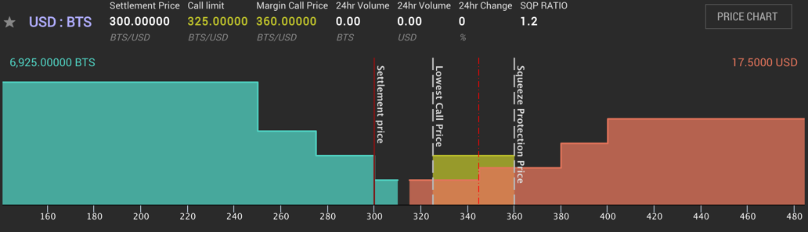
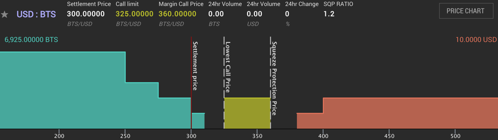

Home / doc.bitshares / bts_holders / dex_margin_mechanics
Margin call mechanics {#dex-margin-mechanics}
The mechanics of a margin call in Bitshares are currently poorly
understood, so I\'d like to try to clarify a little by using examples
from the USD:BTS market. I think part of the current confusion lies in
people talking about the same market but using different market
directions, ie. USD:BTS or BTS:USD, so terms like above/below don\'t
mean the same thing to different people. I will only use USD in these
examples, but USD can be replaced by any bit asset in this context. I
prefer to use the USD:BTS market direction, so these examples will
have prices in BTS/USD.
::: {.contents local=""} Table of Contents :::
What is a margin call?
A margin call is the market forcing you to sell your collateral in order to buy enough USD to close your position. In the USD:BTS market a margin call is equivalent to a bid: it is an order to buy USD for BTS.
A margin call will happen because the price has increased to the point where your collateral is insufficient with respect to the current collateral requirements of the Bitshares market rules. The required collateral is a tuneable parameter in Bitshares, set by the maintenance collateral ratio (MCR) which is maintained by the feed producers (i.e., the witnesses).
How is the call price calculated?
As mentioned above the call price of a margin position depends on the MCR and the amount of debt and collateral in your position. It is independent of the price feed (settlement price). As an example, say you have opened the following position:
- Debt:
10 USD - Collateral:
10000 BTS - MCR is
1.75
The call price of your position is
10000 BTS / (10 * 1.75 USD) = 571.429 BTS/USD.
How is the collateral ratio (CR) calculated?
The collateral ratio depends on the feed price (settlement price).
Taking a feed price of 300 BTS/USD and building on the above example
with 10 USD debt and 10000 BTS collateral:
- CR:
(10000 BTS / 300 BTS/USD) / 10 USD = 3.33
Execution Conditions
When will a margin call happen?
This is where it gets complicated. Margin Call are only possible if the feed price is below your call price. A margin call will happen whenever the squeeze protection price goes above the call price of your position. To better understand how this works, let\'s go back to our margin position and look at collateral ratios:
Say we have the following:
- Debt:
10 USD - Settlement price:
300 BTS/USD - CR:
1 - Collateral is therefore
3000 BTS
This is also known as the Black Swan level, and we want to perform a
margin call before the collateral ratio goes this low. This is why we
have the Maintenance Collateral Ratio (MCR), to enforce a buffer zone
before a position goes into Black Swan territory. So if we apply the MCR
of 1.75 to this position:
- Debt:
10 USD - Settlement Price:
300 BTS/USD - CR:
1.75 - Collateral is therefore
3000 BTS * 1.75 = 5250 BTS
This is much safer, there is a bit of margin for the position to be
closed before going into Black Swan levels. Since in our example, the
USD requires 1.75 ratio, the call price of this position is now
exactly equal to the feed price of 300 BTS/USD.
- Call price:
5250 / (10 * 1.75) = 300 BTS/USD
The remaining question then is, at what point should we force the
position to attempt to close itself? This is where the SQPR comes in.
Let\'s look at two scenarios, SQPR of 1.1 and SQPR of 1.5:
** SQPR of 1.1 **
- Settlement price:
300 BTS/USD - SQPR:
1.1 - Squeeze Protection Price (SQPP):
330 BTS/USD
In this case, any margin position that has a call price below
330 BTS/USD will be forced to settle, and therefore be added to the
orderbook as an order to buy USD for BTS.
** SQPR of 1.5 **
- Settlement price:
300 BTS/USD - SQPR:
1.5 - Squeeze Protection Price (SQPP):
450 BTS/USD
In this case, any margin position that has a call price below
450 BTS/USD will be forced to settle, and therefore be added to the
orderbook as an order to buy USD for BTS.
Discussion
Another way of looking at this is by looking at the Collateral Ratio of the position. If we want to stay at or above the squeeze protection price, what is the required collateral ratio? Let\'s do the math:
- Settlement Price:
300 BTS/USD - MCR:
1.75 - SQPR:
1.1 - Debt:
10 USD - Call price:
CP = SQPP = 300 * 1.1 = 330 BTS/USD - Collateral =
(10 USD * 1.75) * 330 BTS/USD = 5775 BTS
The collateral ratio of this position is
(5775 BTS / 300 BTS/USD) / 10 USD = 1.925.
This is equivalent to the MCR
- SQPR:
1.75 * 1.1 = 1.925.
In other words, in order to stay safe and not be margin called, the
margin position must maintain a collateral ratio higher than
MCR * SQPR.
- Safe position:
CR > MCR * SQPR
At what price will the margin call execute?
This is the part I believe is most misunderstood, so I will use some
screenshots of a fictional USD:BTS market to explain. We will use the
following parameters:
- SQPR:
1.2 - MCR:
1.75 - SQPR * MCR:
2.1 - Settlement price:
300 BTS/USD - Squeeze protection price:
300 * 1.2 = 360 BTS/USD - Debt:
10 USD - Collateral:
5687.5 - CR:
1.896 - Call price:
325 BTS/USD
From what we\'ve seen above, it\'s clear that this position should be
margin called: it has a CR of 1.896 which is well below the safe ratio
of 2.1.
It will therefore get added to the order book as a bid to buy USD like this:
{.align-center width="800px"}
The margin called order will buy any USD priced in the range
325-360 BTS/USD. The squeeze protection price acts as a price ceiling,
meaning the forced margin order will not execute at a very high price in
an illiquid market: it is protected from high prices by the SQPR.
Margin calls only execute in the range [Call Price - SQPP]
A margin call will occur any time the lowest ask is higher than the call price and lower than the SQPP. This has several consequences, as we will see below. It can create some very strange situations, and also force the margin called orders to \"buy high\".
Consequence #1: Asks below the call price prevent margin calls from executing
Because margin calls only execute in the range Call Price - SQPP, if
there is a sell order for 5 USD at 315 BTS/USD in this market, the
call order will not use it, which makes the market look like this:
 {.align-center
width="800px"}
{.align-center
width="800px"}
If a second sell order of 2.5 USD were added at 345 BTS/USD, the
margin called order would still not buy any USD because of the
\"blocking\" sell order at 315 BTS/USD:
 {.align-center
width="800px"}
{.align-center
width="800px"}
If the order at 315 BTS/USD were to be removed, either from being
canceled or from being filled, the order at 345 BTS/USD would
instantly get filled by the margin called order, and the margin called
position would have a reduced debt of 10 - 2.5 = 7.5 USD:
{.align-center width="800px"}
Consequence #2: Margin calls cannot \"buy cheap\" As we\'ve seen above, unless the settlement price goes above the call price of the position, forced margin calls always buy at a premium relative to the settlement price. Even if there are sell orders available at or near the feed price, the margin called orders will not be matched with those sell orders if their call price is higher than the price of those sell orders.
|
|
|